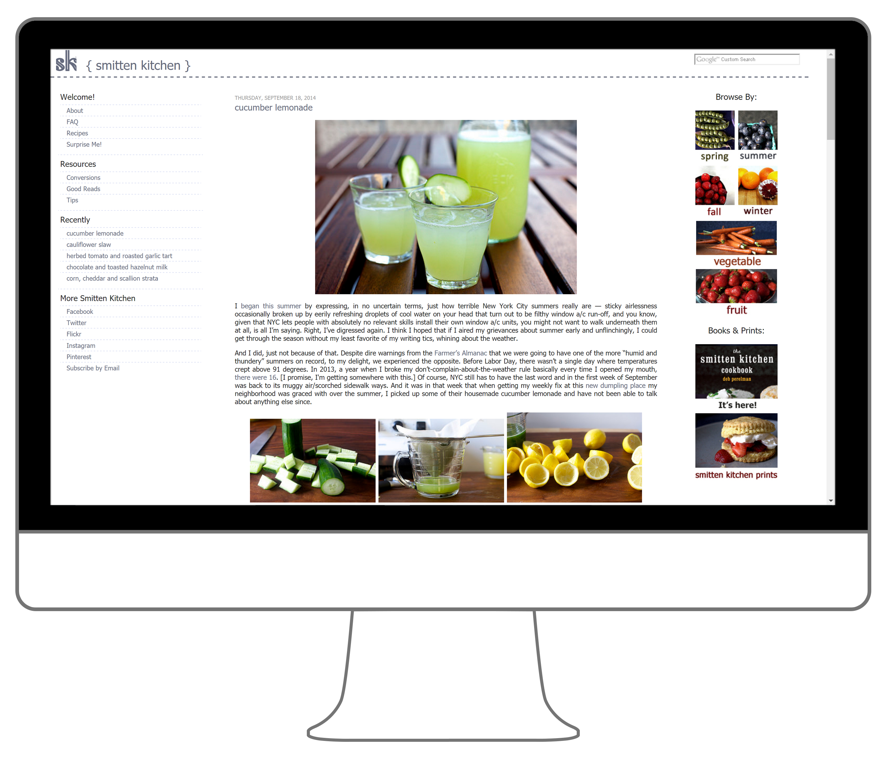
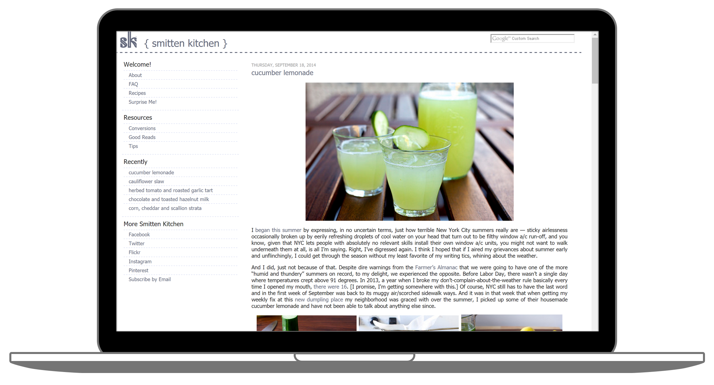
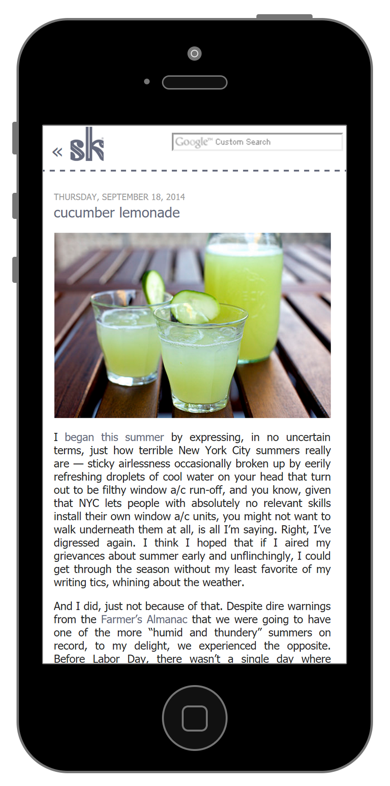

Responsive Design
2014
Software
HTML · CSS
This was an exercise in developing responsive site layouts. At the time, Smitten Kitchen (one of my favorite cooking blogs) had a traditional site layout with no responsive design incorporated. (Here’s an example snapshot of how the site used to look.) Trying to read the site’s recipes on my phone was a painful process while in the kitchen!
I liked the minimalistic appearance of the site and wanted the food photography to share equal space with the interesting blog text. Additionally, the content needed to be easier to read on smaller screens. For the site’s redesign, I kept the overall aesthetics intact but allowed the images to automatically resize to fit the screen space available. In her blog posts, she includes many vibrant images that draw in the audience, but this also required lots of scrolling to read anything. To improve the use of space, I created image grids of the secondary images in each blog post as a more condensed preview for each recipe.
Furthermore, I changed the column layout to be be flexible. The original two column layout of the site, with navigation in one column and blog posts in the other, now became a three-column layout on larger screens so that additional navigation items were more visible. For smaller screens, it transformed into a one-column layout with a side menu to focus on the blog post content. I also moved the search bar to the header of the site for easy access, particularly useful when searching for recipes on any device.
  